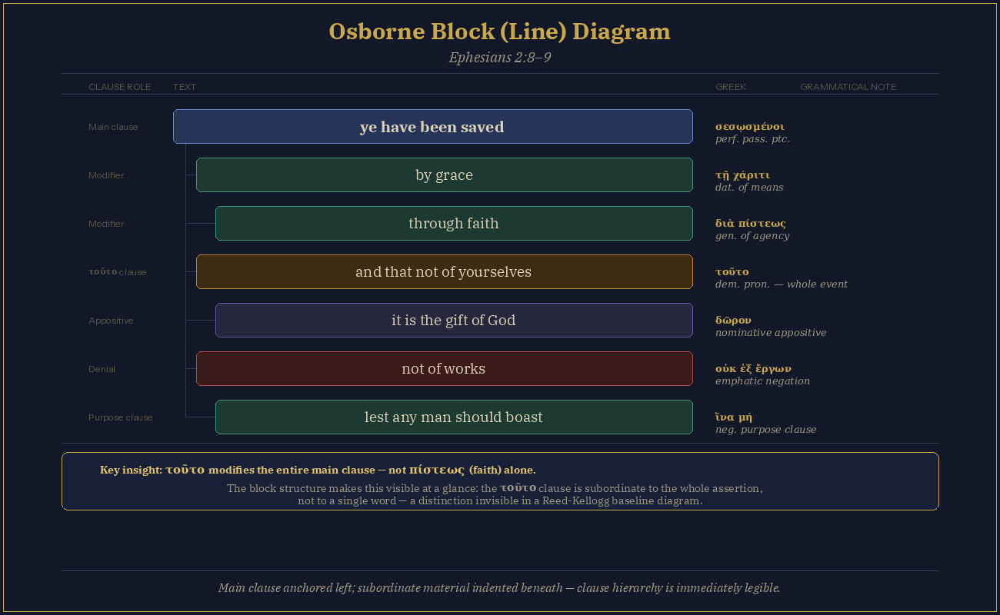

Every Christian should be equipped with a consistent process for interpreting Scripture — one that guards against bias, honors the text, and leads from raw Greek or Hebrew all the way to a sermon with the power to transform lives.
I originally wrote a shortened version of this paper as part of my final for a course on hermeneutics, which is the study of the philosophy and methodology of Biblical interpretation. We used Grant Osborne's The Hermeneutical Spiral as our textbook. I highly recommend it even for casual readers as a reference tool. It's a thick book but readable and has quite a few helpful diagrams and example charts for each step of his process.
Hermeneutics is not a mystical journey reserved for pastors and scholars. Every Christian should be equipped with a process to consistently interpret the Bible with the goal of determining the original authorial intent, God's universal truth, and practical application to their daily life. By systematically moving through the hermeneutical method consistently, we can go from the raw Greek or Hebrew to a detailed sermon with the power to transform lives.
Sometimes we intuitively think we know the meaning of a given text but struggle to articulate the logic behind it. Hermeneutics gives us a uniform process as guardrails to protect against bias, subjectivism, and logical fallacies. Rather than argue solely from authority or traditions, we must always stick to a process that prioritizes the text itself. It's easy to claim "the text means this because the church fathers said so!" but that's a rather narrow minded approach that doesn't involve any rigorous, objective testing.
Grant Osborne argues that proper hermeneutics consists of a 10-step spiral of interpretation. The interpreter moves logically from a macro understanding of the book to a microanalysis of the passage in question. It begins with an inductive study of the text's details and builds to broader theological conclusions. Steps 3–6 represent a separate but connected deductive study of the central truth of the text, or "kernel idea," based on a grammatical meaning and relationship of words.
I wanted to delve into addressing "problem passages" against Free Grace — but I really thought it prudent to be upfront on the process I try to consider when interpreting any text. Following is a very brief outline of each step, giving you a summary of The Hermeneutical Spiral:
Step 1: Chart the Book
Osborne begins by outlining the book with a chart separated into columns for each chapter. Within each column are units of thought within the text separated by a line. He suggests reading the book, then returning to skim over for literary progressions or markers that indicate a break in sections (transitions, mood or tense changes, change in setting, repeated phrases, etc…).
For example, narrative books of the Bible may seem the most straightforward to chart, given they involve a clear progress in dates, places, and people. The prophetic books typically form with a series of present and future judgment, restoration, and glorification. Wisdom literature, Proverbs and Ecclesiastes, might involve smaller clusters of parallels (rich and poor, wise and foolish, righteous and wicked, etc…).
Step 2: Line Diagram the Passage
Next, chart the individual paragraphs using a vertical line chart to show the relationship of individual words, such as modifiers, sentence flow, and clauses. The interpreter has options for organizing the chart, whether each word should be considered or a block of phrases in charting. They may wish to use color coding for relationships and a key.
You might be familiar with the Reed-Kellogg diagram method. That applies the relationship of every word on a single connected line. However, Osborne recommends a simpler block format where each clause is a new line indented. Greek students apply a form of that model in analyzing the New Testament.
Here's a quick example using Ephesians 2:8.

Step 3: Grammatical Study
This step consists of analyzing the meaning of each word in the passage using the grammatical rules associated with the original language. First, the interpreter should determine the source variant preferred for their reading (Masoretic, Byzantine Majority, LXX, etc…). Then, they ought to identify the tense and mood of verbs, the case of nouns, and the relationship of modifiers such as adjectives, conjunctions, and prepositions.
Keep in mind the tenses of Greek are not strict time markers. For example, a text can use the present to describe past action in a historic sense of drawing the reader into the narrative, or it might use it of a future event in a proleptic anticipation (certainty it will come to pass).
Circling back to Ephesians 2:8, the words "you have been saved" employ the Greek passive perfect participle construction σεσῳσμένοι, indicating a past state with present or ongoing results. Paul isn't merely saying they were saved. He communicates that the readers have been saved and remain in the state of grace, reinforcing the earlier Ephesian 1:13 point. Salvation is secure because the Spirit remains sealed in believers forever.
This marks the beginning of the deductive stage in the 10-step process, where the interpreter extracts the "kernel truth" of the passage.
Step 4: Semantical Study
The interpreter is tasked with identifying the best possible meaning of words based on the grammatical relationship and context. Lexicons, such as BDAG, and extrabiblical sources may be consulted for synonyms and related terms — remember the interpreter is applying what best fits the context.
Osborne cautions against several errors in interpreting word meaning. For instance, the lexical or illegitimate totality transfer is the fallacy of applying every possible nuance of a word into a given text without regard to the author's intended use. Rarely do words have technical meanings.
The root fallacy is assigning meaning based on the parts of the individual word, like arguing Ekklesia (where we get the word church) can be broken up literally as "called out ones" though sometimes means just a secular group or even building.
Finally, the disjunctive fallacy forces a sharp distinction in a term that the original language never demands, like a supposed difference between πιστεύω ("I believe") as bare non-salvific intellectualism and a continual trust and reliance that is saving. The Greek word carries neither extreme in any text as a natural reading. Tracing the word through the Gospel of John, interpreters will find it consistently used, over 90 times, simply as persuasion of a proposition — concerning Jesus as the Christ who secures eternal life to whoever believes Him.
At this stage, word studies prove valuable in determining the semantic range of words. Free tools, like Blue Letter Bible, let you search every use of a particular word in the New Testament. You'll find the same words are sometimes applied positively and negatively or figuratively and literally across different texts.
Leaven, for example, is a positive image for the expanse of the Kingdom in Matthew 13:33, but it was actually removed from homes leading up to Passover (Exodus 12) and compared to the spread of sin in the local church in 1 Corinthians 5:6.
The study definitely should involve some basic Greek and Hebrew knowledge. English does not always translate the moods of the original languages. Familiarize yourself with the significance of word order, emphatic constructions, and conditional clauses.
Step 5: Syntactical Study
Here the interpreter determines the relationship between words and phrases to intelligently move from the original language to the "receptor" language. Complex sentences should be divided into individual clauses to transform them into smaller "kernels." Also, they should decode emotional language and figures of speech.
Ephesians 1:3–14 is famously one long sentence and scholars debate how the different clauses all relate in one thought. The goal in passages is finding the main verbs and then working outward to find their subordinate qualifying words and phrases. If it's unclear in a first reading, go back to the original language and create a block diagram (step 2).
Step 6: Background Study
To further glean the significance of a passage, the interpreter should analyze any connections the text has to historical, geographical, economic, military, cultural, and religious backgrounds. Archaeology, extrabiblical sources, and commentaries can prove resourceful in unlocking the shared assumptions between the original author and audience.
John 1:1 uses Logos that have similarities and significant differences to the historical use. While Stoicism considered it the cosmic force that governs all things, John applies a creative and active person to it — the God-man Jesus Christ.
The Gospels are rich with historical details that should be noted for their value on the text. Pharisees, Sadducees, Herodians, Zealots, Samaritans, and other factions each had their own unique practices and culture. Often these differences play a large factor in how they receive Jesus' teachings.
Step 7: Biblical Theology
Then, the interpreter should seek an overall unity of the thematic units around Biblical progressions (such as the Holy Spirit or eternal security). This research may be seen as independent of exegesis.
Doctrines never rest on a single verse or passage. They ought to be traced to see their pattern through the canon, from first foreshadowing to the culmination of detailed revelation. Seeing the thread of the teaching throughout the Bible tells what the original readers may or may not have fully understood — reminding us not to read too heavily later revelation back into a text nor isolate a text from the progressive revealing of truth. We should avoid both anachronism and atomism.
Stage 8: Historical Theology
As a supplemental aid, the interpreter should determine any relevance kernel units have to church history. This step helps the modern reader understand the impact of the passage on current theological debates, developments of our traditions, and identifying any presuppositions underlying historical tensions.
Free Grace theologians do not ignore church history. Councils, church fathers, confessions, and creeds are all valuable templates of interpretive conclusions. They act as supplemental aids ready to test against the weight of evidence in the text itself.
Stage 9: Systematic Theology
As part of the wider inductive study, interpreters should identify all related doctrines and study each relevant passage to determine all nuances. Rather than focusing on proof texts, they should apply hermeneutical principles to the text itself and recognize the contextualization of the reader's traditions, community, experience, and philosophical bias. The systematic approach to theology creates a theological model that attempts a synthesis of Scripture on the subject.
Step 7 is concerned with the relevant doctrine in the passage in question, but a systematic theology approach looks at the whole of the Bible for all interconnected doctrines and their relation to every framework.
Psalms 45, for instance, relates to Christology (quoted in Hebrews 1) and eschatology concerning the Kingdom. Reformed, dispensational, Catholic, and liberal theologians each approach the text according to their own assumptions. Each model reads the royal and kingdom language of Psalm 45 differently — whether its fulfillment is entirely realized in Christ's current reign, partially fulfilled and awaiting a future kingdom, or reserved for a literal millennial rule. The interpreter should evaluate which framework has the best explanatory power across the full range of relevant texts.
Stage 10: Homiletical Theology
Finally, the homiletical theology step focuses on effectively presenting the research to the modern audience. The interpreter should determine methods of contextualizing the significance of meaning to a receptor language or culture. They should emphasize the application of the meaning in terms the audience will believe and practice. However, Scripture is still the authority. Language is dynamic and yet parts of a passage's cultural or "time-bound." Balance is demanded and Osborne offers a four-step method to determine if an element is cultural: (1) determine the extent of the underlying theological principle behind the surface application, (2) identify whether the writer leans on traditional teaching or applies temporary application to a specific cultural problem, (3) when the teaching transcends cultural bias of the author it likely is universal, and (4) finally if the command is wholly tied to a cultural practice it is not timeless.
Consider 1 Corinthians 11:1–16, which addresses head coverings in corporate worship. Applying Osborne's criteria, the surface command — women veiling, men not covering their heads — is clearly tied to first-century Greco-Roman honor culture. Head coverings carried specific social meaning about gender and respect. However, Paul does not simply appeal to culture. He roots his reasoning in the order of creation. That logic suggests a theological principle beneath the cultural application. The interpreter must determine what Paul intended about the principle should be considered universally binding and how that might be expressed in modern culture.
Osborne also devotes time to instructing on the sermon writing process. The preacher should approach them like a spiritual act, not a wholly academic one. They should use illustration, research, and narration to present the text to persuade the listeners of God's truth.
Conclusion
The Bible is a complex book, or rather the collection of 66 different writings of unique genres and styles by 40 different authors over the course of 2,000 years. Naturally, the Christian needs to interpret each individual text as it relates to its own context and also fits within the broader canon. We never want to view hermeneutics as merely an academic exercise for elites. God wants everyone to clearly understand His Word to believe in the promise of eternal life given by the resurrected Savior, King Jesus.
Reference
Osborne, Grant R. The Hermeneutical Spiral: A Comprehensive Introduction to Biblical Interpretation. 2nd ed. Downers Grove: IVP Academic, 2006.